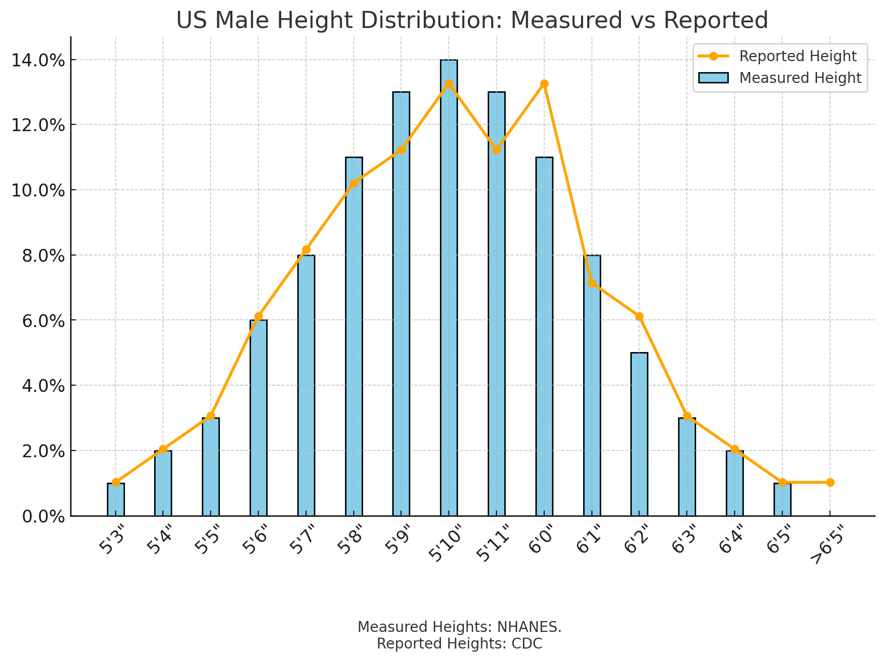

Perfection of Slavery, A Great Book (You've Already Read), A Better Dictionary, and More
On Capitalism...
Capitalism preys on the weak and unable, extracting maximum value.
Youtube channels aimed at children are ridiculously profitable... because kids don't know how to use an AdBlocker.
80% of people think they are above-average drivers. How tall are you?

4 Cool Things
Video On Why Capitalism Isn't Perfect 🇺🇸
Consumerism is the Perfection of Slavery - Prof Jiang Xueqin
In You vs You #4, I linked to a video called, "1955 vs 2025, Who Had It Better?", and this lecture clip complement it well. I love this concept that we have wrongly transitioned away from the worker and towards the consumer. Very insightful.
Better Dictionary 📖
You’re probably using the wrong dictionary by James Somers
Did you know the dictionary you've been using your whole life kinda sucks? Turns out there is a better one that you can easily setup on your computer, kindle, etc.
Book For Younger People 🌎
Teenagers: Preparing for the Real World by Chad Foster
This was required reading in one of my 8th grade classes. The biggest lesson was just how important it is to save contact information and stay in touch with those people if you want to be successful in the real world. A short but powerful read.
Short Fiction Piece On AI 🤖
It’s Already Happened by quarter--mile
Just an interesting thought that all the bad stuff related to AI has already happened.
Grow Your Network
Chad Foster
https://chadfoster.com
Since I know a handful of you reading this also had Mrs. Archer's class and thus have already read the book mentioned above, reach out to this guy: chadwfoster@att.net
Just say hey I loved your book, and my friend Eli told me to email you (I've emailed him before) or something like that. He'll respond; you now know Chad Foster. If anyone is willing to be emailed, it is the guy who wrote a book on the importance of sending mail.